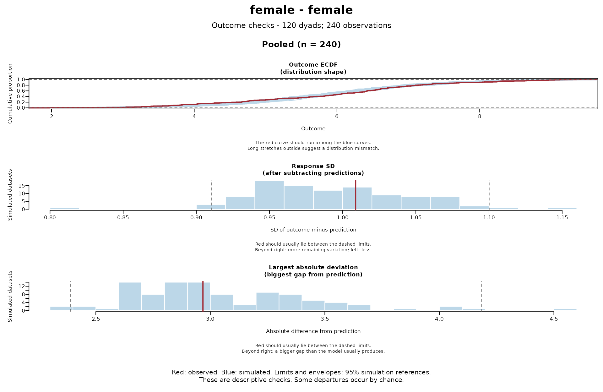
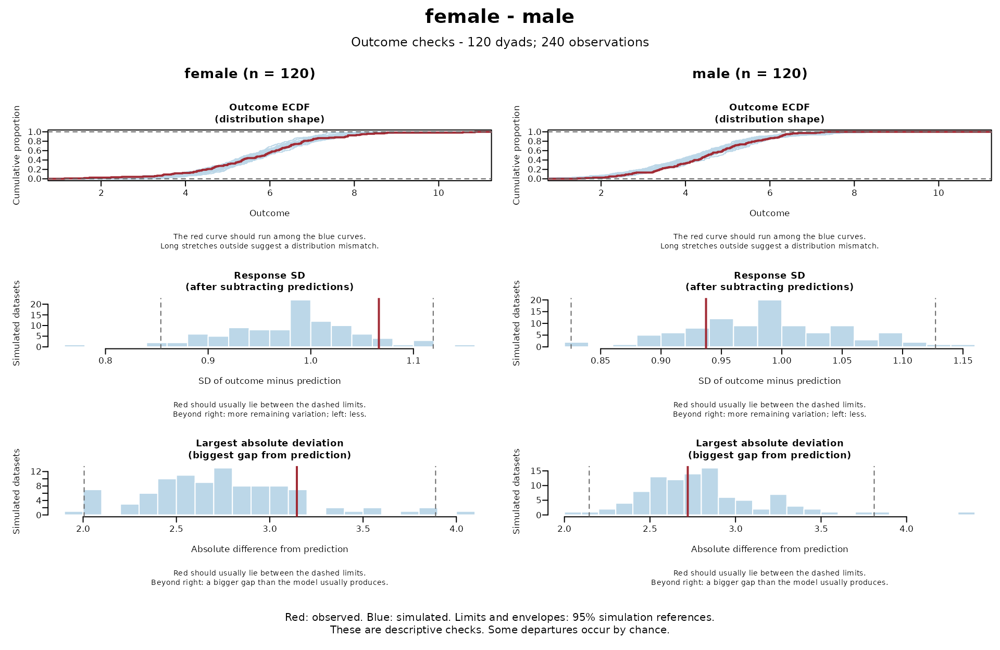
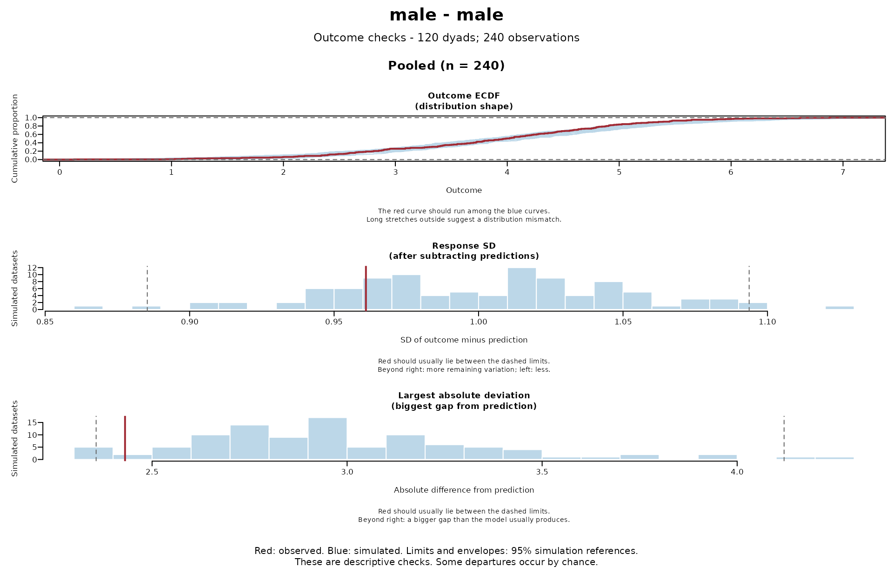

Check outcome distributions against model simulations
Source:R/predictive_checks_outcomes.R
check_dyad_outcomes.Rd![[Experimental]](figures/lifecycle-experimental.svg) A model should reproduce the distribution of the observed outcomes. This
check compares the observed outcome distribution and summaries (response SD
after subtracting predictions, largest absolute deviation from prediction,
number of zeros) with complete datasets from
A model should reproduce the distribution of the observed outcomes. This
check compares the observed outcome distribution and summaries (response SD
after subtracting predictions, largest absolute deviation from prediction,
number of zeros) with complete datasets from simulate_dyad_responses().
This helps identify mismatches in the model's assumptions, such as the
distribution family, dispersion, or zero inflation.
For PIT residual patterns, also run check_dyad_residuals() with the same
simulations.
For guidance on how to read the plots, see plot.dyadMLM_outcome_check().
Usage
check_dyad_outcomes(
simulations,
dyad = NULL,
role = NULL,
member = NULL,
plot = TRUE,
ask = NULL,
panels = TRUE,
data = NULL
)Arguments
- simulations
An object from
simulate_dyad_responses(). At least 1,000 simulated datasets are recommended for stable comparisons.- dyad
Dyad ID column, with or without quotes. Required when
roleis supplied.- role
Role column, with or without quotes, such as gender.
NULL(default) pools all observations. Otherwise, each composition (pair of partners' roles, such as female-male) is checked separately. Each member must keep the same role. With few dyads in a composition, the simulated ranges are wide, so its panels lack sensitivity.- member
Person ID column, with or without quotes. Required with
rolewhen dyads have repeated observations.- plot
If
TRUE(default), draw the comparison plots for visual checks. IfFALSE,askandpanelsare ignored.- ask
Whether to pause between figures on an interactive device.
NULL(default) pauses when there is more than one figure,TRUEpauses andFALSEdraws without pausing. File devices never pause.- panels
If
TRUE(default), arrange checks in figures by composition, with one column per role or a pooled column. IfFALSE, draw each check and role separately.- data
The unchanged data used to fit the model. Supply it when the columns you name (such as
role) are not in the model formulas. Also supply it when rows were excluded during fitting (e.g., for missing values). Otherwise, a person whose partner's rows were excluded has an unknown composition and is omitted.
Value
Invisibly returns a dyadMLM_outcome_check list with role-specific
summary matrices and outcome distributions in compositions. Matrices have
one column per dataset (observed first, then all simulated). Optionally,
suppress plotting with plot = FALSE and draw the saved result later with
plot(result), which also takes ask and panels.
Scope
Complete simulated datasets keep the fitted partner and time dependence and
any modeled differences in variability between roles. Unlike DHARMa's default
(since version 0.5.0), simulations redraw all random effects. Dyadic models
often fix the residual variance near zero (dispformula = ~ 0) and model the
partners' residual variances and covariance as random effects. If held
fixed, these random effects would reproduce the data almost exactly.
Parameters stay fixed at their fitted values, so parameter uncertainty is not
included. These are descriptive checks, not significance tests, and
differ from DHARMa's plots and tests (see the
distribution-checks article).
They do not directly assess serial correlation.
Predicted outcomes are mean predictions with random effects set to zero (see
simulate_dyad_responses()). The checks use the same fitted rows and
families as simulate_dyad_responses() and weight all observations equally.
For cross-sectional data, check partner correlations with
check_partner_dependence().
Examples
example_data <- prepare_dyad_data(
dyads_cross,
dyad = coupleID,
member = personID,
model_types = "none",
seed = 123
)
# Exchangeable dyads: the two random-effect blocks represent the partners'
# residual variances and covariance.
model <- glmmTMB::glmmTMB(
closeness ~ gender + provided_support +
us(1 | coupleID) + us(0 + .member_contrast_arbitrary | coupleID),
dispformula = ~ 0,
data = example_data
)
simulations <- simulate_dyad_responses(
model,
nsim = 100, # Low for a quick example. Use at least 1,000.
seed = 123
)
check_dyad_outcomes(
simulations,
dyad = coupleID,
role = gender,
ask = FALSE
)


